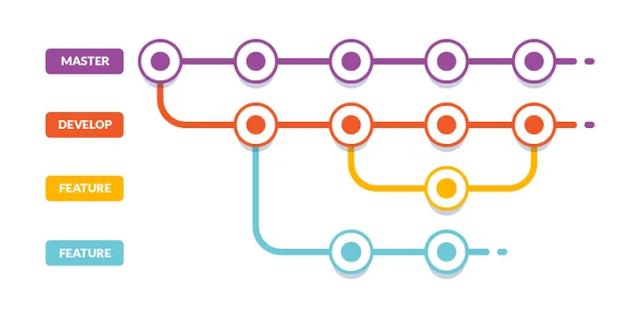
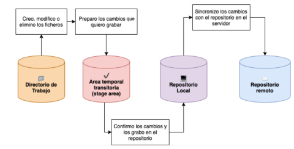

¿Que es un control de versiones?
Un control de versiones es un sistema que registra cada cambio que se realiza
en el código fuente de un proyecto. Esto te permite tener un histórico de todos los
cambios producidos en sus ficheros, saber quién lo hizo y cuándo.
Podría entenderse como un sistema para crear copias de seguridad de nuestro
código, y en gran parte así es, pero su uso también se extiende a cómo lidiamos con
las actualizaciones de ese código y lo sincronizamos entre diferentes personas que
trabajan y revisan el mismo proyecto.
¿Que es Git?
Git es un sistema distribuido de control de versiones, gratuito y de código abierto diseñado por Linus Torvalds, pensando en la eficiencia, la confiabilidad y compatibilidad del mantenimiento de versiones de aplicaciones cuando estas tienen un gran número de archivos de código fuente.
¿Que es un repositorio?
Un repositorio es una carpeta en la que se almacenan las diferentes versiones de los ficheros de un proyecto y el historico de los cambios que se han realizado en ellos.
REPOSITORIO LOCAL: Es un contenedor de archivos que se encuentra en tu ordenador. Éste puede tener un proyecto lleno de diferentes archivos y es allí donde vas haciendo tus modificaciones y guardardolas para así, ir creando varias versiones.
REPOSITORIO REMOTO: son versiones de tu proyecto que están hospedadas en Internet o en cualquier otra red. Puedes tener varios de ellos, y en cada uno tendrás generalmente permisos de solo lectura o de lectura y escritura.
¿Qué es GITHUB?
es una plataforma donde puedes almacenar, compartir y trabajar junto con otros usuarios para escribir código.
¿Qué es una rama en GIT y para qué sirve?

Que es: Una rama es simplemente una versión de la colección de directorios y archivos del
repositorio. Cada vez que se crea una nueva rama, se crea una copia de la colección
de archivos actual.
Para que sirve: desarrollar características, corregir errores, o experimentar con seguridad las ideas nuevas en un área contenida de tu repositorio.
¿Cuáles son los estados en GIT?

Los estados de Git son 3:
1. modificado (modified): El archivo contiene cambios pero todavía no han sido
marcados para ser confirmados. Se encuentra en el directorio de trabajo.
2. preparado (staged): Son los archivos que han sido modificados en el directorio
de trabajo y se han marcado como preparados para ser confirmados en el
repositorio local. Se encuentran en un área temporal transitoria. Esta acción
recibe el nombre de add.
3. confirmado (committed): El archivo se encuentra grabado en el repositorio
local. Esta acción recibe el nombre de commit.
¿Qué es la terminal, consola o línea de comandos y para qué sirve?
la linea de comandos GIT es la interfaz más básica que se puede usar para trabajar con Git, pero también es la única que te ofrece las más complejas y completas funcionalidades de control. Además, sólo esta interfaz es completamente universal e independiente de la plataforma, del sistema operativo y de los editores de texto, también conocidos como IDE.
sirve para ejecutar programas y scripts directamente desde el sistema operativo, crear, mover, copiar, renombrar y eliminar archivos de manera eficiente, Permite realizar configuraciones y ajustes en el sistema operativo que pueden no estar disponibles a través de una interfaz gráfica.
Funcionamiento de los siguientes comandos
- LS: nos permite ver el contenido del directorio de trabajo actual.
- CD: Este comando nos permite cambiar de carpeta
- CD ..:nos permite regresar al directorio o carpeta anterior.
- PWD:nos muestra la carpeta actual en la que nos encontramos.
- MKDIR (NOMBRE):nos permite crear carpetas
- TOUCH (NOMBRE):nos permite crear archivos nuevos
- RM (NOMBRE):me permite eliminar la carpeta y los archivos dentro de ella de forma recursiva.
- CP (NOMBRE) (DIRECTORIO):nos permite copiar un archivo.
- MV (NOMBRE) (DIRECTORIO):nos permite mover un archivo.
Listado con el nombre y el funcionamiento de los comandos vistos en la sesión
de clase de GIT.
- git --version: Muestra la versión de Git que está instalada actualmente en tu sistema.
- git init: Inicializa un nuevo repositorio de Git en el directorio actual. Esto crea un subdirectorio .git que contiene todos los archivos necesarios para el control de versiones.
- git config user. name: Establece el nombre de usuario para el repositorio actual. Se utiliza para asociar los commits con tu nombre.
- git config --global user.name "........": Establece el nombre de usuario a nivel global para todos los repositorios. Esto generalmente se hace una vez y se aplica a todos los proyectos en tu máquina.
- git config user.email: Establece el correo electrónico del usuario para el repositorio actual, asociando los commits con tu correo.
- git git config --global user.email ".......": Establece el correo electrónico del usuario a nivel global para todos los repositorios, similar a establecer el nombre de usuario global.
- git clone: Crea una copia de un repositorio de Git existente, generalmente desde un servidor remoto, en un nuevo directorio en tu máquina local.
- git add index .html: Agrega el archivo index.html al área de preparación (staging area), preparándolo para un commit.
- git add . : Agrega todos los archivos modificados en el directorio actual al área de preparación. El punto (.) indica que todos los cambios deben ser preparados.
- git status: Muestra el estado del directorio de trabajo y el área de preparación, incluyendo cualquier cambio que se haya preparado para el commit, cambios que no se han preparado y archivos que no están siendo rastreados por Git.
- git commit -m "......": Hace un commit de los cambios en el área de preparación al repositorio con un mensaje que describe los cambios. El mensaje se especifica después del argumento -m.
- git log: Muestra un registro de todos los commits realizados en el repositorio, mostrando los commits, autores, fechas y mensajes de los commits.
para crear cuenta en git hub
- git init: Inicializa un nuevo repositorio de Git
- git add README.md: Agrega el archivo README.md al área de preparación, preparándolo para un commit.
- git commit -m "....": Hace un commit de los cambios preparados con un mensaje descriptivo.
para subir documentos
- git branch -M main: Cambia el nombre de la rama actual a main. Esto se hace a menudo para seguir la convención de usar "main" como el nombre de la rama principal en lugar de "master."
- git remote add origin "https......": Agrega un repositorio remoto llamado origin con la URL especificada. Esta URL es típicamente la ubicación de tu repositorio en GitHub.
- git push -U origin main: Empuja la rama local main al repositorio remoto en origin y establece origin como el upstream para la rama main. La opción -U significa --set-upstream, lo que implica que futuros push y pull por defecto usarán este remoto y rama.